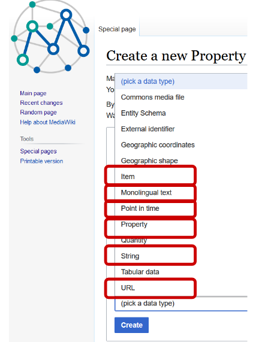

#### Federated Queries for Literary Studies:<br/> Querying Wikidata via the MiMoTextBase <br/>and the other way around <br/> <hr/> <p>Maria Hinzmann, Julia Röttgermann and Christof Schöch<br/> with Matthias Bremm, Tinghui Duan, Anne Klee, Johanna Konstanciak and Joëlle Weis</p> <p>Slides: <a href="https://mimotext.github.io/lod-lithist/federated-queries.html">https://mimotext.github.io/lod-lithist/federated-queries.html</a></p> <p><strong><emph>LOD and Literary Studies, Berlin</emph> | November 19-20, 2024</strong></p> <hr/> <img height="50" data-src="img/basics/tcdh-slim.png"> <img height="50" data-src="img/basics/uni-trier.png"> <img height="50" data-src="img/basics/mwrlp.svg"> :: -- ## Overview 1. [Introduction](#/2) 2. [Steps towards federation](#/3) 3. [Federated Queries (I): MiMoTextBase => Wikidata](#/4) 4. [Federated Queries (II): Wikidata => MiMoTextBase](#/5) 5. [Outlook](#/6) -- ## (1) Introduction --- #### MiMoText in a nutshell <a href="img/overview_eng.jpg"><img height="450" data-src="img/overview_eng.jpg"></a> <br/><a href="https://mimotext.uni-trier.de/en">https://mimotext.uni-trier.de/en</a> More information: Schöch et al. ([2022](https://doi.org/10.3366/ijhac.2022.0278)), Hinzmann et al. ([2024](https://doi.org/10.5281/zenodo.12080340)) --- #### The MiMoTextBase <a href="http://data.mimotext.uni-trier.de/wiki/Main_Page"><img height="450" src="img/mimotextbase.png"></img></a> - [data.mimotext.uni-trier.de](https://data.mimotext.uni-trier.de) --- #### The SPARQL endpoint <a href="img/sparql-interface-ex-queries2.png"><img height="400" src="img/sparql-interface-ex-queries2.png"></img></a> - SPARQL = SPARQL Protocol and RDF Query Language - Query interface: [query.mimotext.uni-trier.de](https://query.mimotext.uni-trier.de) - Tutorial: [docs.mimotext.uni-trier.de](https://docs.mimotext.uni-trier.de) --- #### Aims of the project - Idea: Create a "Wikidata for literary history" <!-- .element: class="fragment" data-fragment-index="1" --> - Information system for literary history - LOD-based, with exploratory interface and SPARQL-endpoint - Approach of an "atomization" of literary history historical knowledge - Compared to Wikidata: <!-- .element: class="fragment" data-fragment-index="2" --> - Focused on one domain (French novel 1750-1800) - Better coverage and higher density of assertions for this domain - Based on explicit data modeling (towards a systematic [ontology](https://github.com/MiMoText/ontology)) - Smaller (approx. [340,000 triples](https://tinyurl.com/2lapn3a6)) (versus [16 billion Wikidata triples](https://w.wiki/6Piz)) - Federation with Wikidata <!-- .element: class="fragment" data-fragment-index="3" --> - Complimentarity of both knowledge graphs: MiMoTextBase (domain-specific) and Wikidata (cross-domain) - Bidirectional federation to connect advantages of both data bases -- ## (2) Steps towards federation --- #### MiMoTextBase as part of the Wikibase ecosystem <a href="img/wikibase_ecosystem_neu.png"><img height="450" data-src="img/wikibase_ecosystem_neu.png"></a> A view of the MiMoTextBase within the Wikimedia Linked Open Data web. Credit original visualization: [[Manuel Merz](https://commons.wikimedia.org/wiki/File:Linked-open-data-web.png) / CC-BY-SA 4.0](https://blogs.tib.eu/wp/tib/2021/11/05/tib-at-wikidatacon-part-1/) --- #### Linking both knowledge graphs <a href="img/federation-bidirectional_overview.png"></a> --- #### Process overview - Linking MiMoTextBase with Wikidata <!-- .element: class="fragment" data-fragment-index="1" --> - Reconciliation with OpenRefine - Manual corrections - Definition of a subset to share with Wikidata <!-- .element: class="fragment" data-fragment-index="2" --> - Subcorpus of 200 fulltexts ([collection “roman 18”](https://doi.org/10.5281/zenodo.10404966)) - Definition of relevance criteria to add further novels - => in total: about 800 novels (out of about 2000) - Linking Wikidata with the MiMoTextBase <!-- .element: class="fragment" data-fragment-index="3" --> - Proposition of the MiMoText ID to Wikidata - Creation of new novels in Wikidata and linking them (& already existing novels) to MiMoText novels (using QuickStatement / tool chain with OpenRefine) - Selection of statements added to Wikidata, more specific statements in the MiMoTextBase - [Whitelisting](https://www.mediawiki.org/wiki/Wikidata_Query_Service/User_Manual/SPARQL_Federation_endpoints/pl) MiMoText sparql endpoint in Wikidata ([Phabricator-Ticket](https://phabricator.wikimedia.org/T351488)) - For more information see <!-- .element: class="fragment" data-fragment-index="4" --> - [MiMoText interview with Christos Varvantakis (Wikimedia Deutschland)](https://tech-news.wikimedia.de/2024/06/28/modeling-the-enlightenment-novel-an-interview-with-the-mimotext-team/) - [our documentation](https://github.com/MiMoText/ontology/blob/main/module13_federation/federation_mimotextbase_wikidata.md) --- #### The query syntax <a href="img/query-syntax-federated-query.png"><img height="400" data-src="img/query-syntax-federated-query.png"></a> -- ## (3) Federated Queries (I): MiMoTextBase => Wikidata --- #### Example Queries: MiMoTextBase => Wikidata - [Narrative locations of novels (map)](https://query.mimotext.uni-trier.de/#%23title%3ANarrative%20locations%20of%20the%20MiMoText%20novels%20on%20a%20map%0A%23defaultView%3AMap%0APREFIX%20wd%3A%20%3Chttp%3A%2F%2Fwww.wikidata.org%2Fentity%2F%3E%20%23wikidata%20entity%0APREFIX%20wdt%3A%20%3Chttp%3A%2F%2Fwww.wikidata.org%2Fprop%2Fdirect%2F%3E%20%23wikidata%20property%0APREFIX%20mmd%3A%3Chttp%3A%2F%2Fdata.mimotext.uni-trier.de%2Fentity%2F%3E%20%23mimotext%20entity%0APREFIX%20mmdt%3A%3Chttp%3A%2F%2Fdata.mimotext.uni-trier.de%2Fprop%2Fdirect%2F%3E%20%23mimotext%20property%0ASELECT%20DISTINCT%20%3Fitem%20%3FitemLabel%20%3Fnarr_loc%20%3Fnarr_locLabel%20%3FWikiDataEntity%20%3FcoordinateLocation%0AWHERE%20%7B%20%3Fitem%20mmdt%3AP32%20%3Fnarr_loc.%20%23%20item%20-%3E%20has%20narrative%20location%20-%3E%20spatial%20concept%20item%20of%20narrative%20location%0A%20%20%3Fnarr_loc%20mmdt%3AP13%20%3FWikiDataEntity.%20%23%20spatial%20concept%20item%20of%20narrative%20location%20-%3E%20has%20exact%20match%20-%3E%20corresponding%20wikidata%20item%0A%20%20%23Federated%20Query%20-%3E%20Wikidata%0A%20%20SERVICE%20%3Chttps%3A%2F%2Fquery.wikidata.org%2Fsparql%3E%20%7B%0A%09%3FWikiDataEntity%20wdt%3AP625%20%3FcoordinateLocation%0A%20%20%7D%20%20%20%20%20%20%09%20%0A%20%20SERVICE%20wikibase%3Alabel%20%7B%20bd%3AserviceParam%20wikibase%3Alanguage%20%22en%22%20.%20%7D%0A%7D) - [*Narrative Location of novels about "travel"](https://query.mimotext.uni-trier.de/#%23title%3ANarrative%20Location%20of%20novels%20about%20%22travel%22%0A%23defaultView%3AMap%7B%22hide%22%3A%20%5B%22%3Fnar_loc%22%2C%20%22%3Ftopic%22%5D%2C%20%22layer%22%3A%20%22%3FthemeLabel%22%7D%0APREFIX%20mmd%3A%3Chttp%3A%2F%2Fdata.mimotext.uni-trier.de%2Fentity%2F%3E%20%23mimotext%20entity%0APREFIX%20mmdt%3A%3Chttp%3A%2F%2Fdata.mimotext.uni-trier.de%2Fprop%2Fdirect%2F%3E%20%23mimotext%20property%0APREFIX%20wd%3A%20%3Chttp%3A%2F%2Fwww.wikidata.org%2Fentity%2F%3E%20%23wikidata%20entity%0APREFIX%20wdt%3A%20%3Chttp%3A%2F%2Fwww.wikidata.org%2Fprop%2Fdirect%2F%3E%20%23wikidata%20property%0A%0ASELECT%20DISTINCT%20%3Fitem%20%3FitemLabel%20%3FnarrLoc%20%3FnarrLocLabel%20%3FwikidataEntityLink%20%3FcoordinateLocation%20%3Ftheme%20%3FthemeLabel%20WHERE%20%7B%0A%20%20%3Fitem%20mmdt%3AP36%20mmd%3AQ3126.%20%20%23%20work%20item%20is%20about%20travel%0A%20%20%3Fitem%20mmdt%3AP36%20%3Ftheme.%20%20%20%20%23%20work%20is%20about%20themes%0A%20%20%3Fitem%20mmdt%3AP32%20%3FnarrLoc.%20%20%23%20work%20has%20narrative%20location%0A%20%20%3FnarrLoc%20mmdt%3AP13%20%3FWikiLink.%20%20%23%20narrative%20location%20has%20exact%20match%20with%20Wikidata%20ID%0A%20%20%23Federated%20Query%20-%3E%20Wikidata%0A%20%20SERVICE%20%3Chttps%3A%2F%2Fquery.wikidata.org%2Fsparql%3E%20%7B%0A%20%20%20%20%3FWikiLink%20wdt%3AP625%20%3FcoordinateLocation%20.%0A%20%20%7D%0A%20%20SERVICE%20wikibase%3Alabel%20%7B%0A%20%20%20%20bd%3AserviceParam%20wikibase%3Alanguage%20%22en%22%20.%0A%20%20%7D%0A%7D%0A) - [Authors by birth year, with portrait](https://query.mimotext.uni-trier.de/#%23%20show%20authors%2C%20their%20Wikidata%20match%2C%20their%20birth%20dates%20in%20a%20timeline%20%0A%23defaultView%3ATimeline%0APREFIX%20wd%3A%20%3Chttp%3A%2F%2Fwww.wikidata.org%2Fentity%2F%3E%20%23wikidata%20prefix%20definition%20for%20entity%0APREFIX%20wdt%3A%20%3Chttp%3A%2F%2Fwww.wikidata.org%2Fprop%2Fdirect%2F%3E%20%23wikidata%20prefix%20definition%20for%20property%0Aprefix%20mmd%3A%3Chttp%3A%2F%2Fdata.mimotext.uni-trier.de%2Fentity%2F%3E%20%23mimotext%20prefix%20for%20entity%20%0Aprefix%20mmdt%3A%3Chttp%3A%2F%2Fdata.mimotext.uni-trier.de%2Fprop%2Fdirect%2F%3E%20%23mimotext%20prefix%20for%20property%20%0ASelect%20%3Fauthor%20%3FauthorLabel%20%3FwikiLink%20%3Fbirth%20%3Fimage%20%0A%7B%0A%20%20%3Fauthor%20mmdt%3AP11%20%3Foccupation.%0A%20%20%3Fauthor%20mmdt%3AP13%20%3FwikiLink.%0A%20%20%3Fauthor%20rdfs%3Alabel%20%3FauthorLabel%0A%20%20Filter%28lang%28%3FauthorLabel%29%20%3D%20%22en%22%29%0A%20%20%20%20%20%20%20%20%20%20%0A%20%20SERVICE%20%3Chttps%3A%2F%2Fquery.wikidata.org%2Fsparql%3E%20%7B%0A%20%20%20%20%3FwikiLink%20wdt%3AP569%20%3Fbirth.%20%0A%20OPTIONAL%7B%20%20%20%3FwikiLink%20wdt%3AP18%20%3Fimage.%7D%0A%0A%20%20%7D%0A%20%20%20%20%20%20%20%20%20%20%20%0A%7D%0A) - [*Alternative author names from Wikidata infobox](https://query.mimotext.uni-trier.de/#%23title%3AAlternative%20Labels%20of%20author%20names%20via%20%E2%80%98federated%E2%80%99%20queries%E2%80%99%0APREFIX%20mmd%3A%3Chttp%3A%2F%2Fdata.mimotext.uni-trier.de%2Fentity%2F%3E%0APREFIX%20mmdt%3A%3Chttp%3A%2F%2Fdata.mimotext.uni-trier.de%2Fprop%2Fdirect%2F%3E%0A%0ASELECT%20DISTINCT%20%3Fauthor%20%3FauthorLabel%20%3FwikidataEntity%20%3Faltname%0AWHERE%20%7B%0A%20%20%20%20%20%20%20%20%20%3Fitem%20mmdt%3AP5%20%3Fauthor.%0A%20%20%20%20%20%3Fauthor%20rdfs%3Alabel%20%3FauthorLabel%20.%0A%20%20%20%20%20FILTER%28LANG%28%3FauthorLabel%29%20%3D%20%22fr%22%29%20.%0A%20%20%20%20%20%20FILTER%28CONTAINS%28LCASE%28%3FauthorLabel%29%2C%20%22voltaire%22%29%29.%0A%20%20%20%20%20%20%3Fauthor%20mmdt%3AP13%20%3FwikidataEntity.%20%20%23exact%20match%0A%20%0A%20%20%20%20%20%20%23Federated%20Query%20-%3E%20Wikidata%0ASERVICE%20%3Chttps%3A%2F%2Fquery.wikidata.org%2Fsparql%3E%20%7B%0A%20%20%20%20%20%20%20%20%20%3FwikidataEntity%20skos%3AaltLabel%20%3Faltname%0A%20%20%20%20%20%20%20%20%20%20%20%20%0A%20%20%20%20%20%20%7D%20%20%20%20%20%0A%20%20%20%20%20%20%20%20%20%20%20%20%20%20%20%20%20%0A%20%20%20%20%20%20SERVICE%20wikibase%3Alabel%20%7B%0A%20%20%20%20%20%20%20%20%20bd%3AserviceParam%20wikibase%3Alanguage%20%22en%22%20.%0A%20%20%20%20%20%20%7D%0A%7D%0A) - [Network of influences between authors (using ‘influenced by’)](https://query.mimotext.uni-trier.de/#%23title%3AInfluence%20networks%20of%20authors%20via%20%27federated%20query%27%0A%23defaultView%3AGraph%0APREFIX%20wd%3A%3Chttp%3A%2F%2Fwww.wikidata.org%2Fentity%2F%3E%20%23wikidata%20entity%0APREFIX%20wdt%3A%3Chttp%3A%2F%2Fwww.wikidata.org%2Fprop%2Fdirect%2F%3E%20%23wikidata%20property%0A%0APREFIX%20mmd%3A%3Chttp%3A%2F%2Fdata.mimotext.uni-trier.de%2Fentity%2F%3E%20%23mimotext%20entity%0APREFIX%20mmdt%3A%3Chttp%3A%2F%2Fdata.mimotext.uni-trier.de%2Fprop%2Fdirect%2F%3E%20%23mimotext%20property%0A%0ASELECT%20DISTINCT%20%3Fitem%20%3FitemLabel%20%3FauthorLabel%20%3Finfluencedby%20%3Fimage%20%0AWHERE%20%7B%0A%20%20%20%20%20%20%3Fitem%20mmdt%3AP5%20%3Fauthor.%0A%20%20%20%20%20%20%3Fauthor%20mmdt%3AP13%20%3FWikidataEntity.%20%20%23exact%20match%0A%20%20%20%20%20%20%0A%23Federated%20Query%20-%3E%20Wikidata%0A%20%20%20%20%20%20SERVICE%20%3Chttps%3A%2F%2Fquery.wikidata.org%2Fsparql%3E%20%7B%0A%20%20%20%09%20%3FWikidataEntity%20wdt%3AP737%2Fwdt%3AP737%20%3Finfluencedby.%0A%20%20%09%09%20OPTIONAL%20%7B%20%20%3Finfluencedby%20wdt%3AP18%20%3Fimage.%7D%0A%20%20%20%20%20%20%7D%20%20%20%20%20%0A%20%09%09%20%0A%20%20%20%20%20%20SERVICE%20wikibase%3Alabel%20%7B%0A%20%20%20%09%20bd%3AserviceParam%20wikibase%3Alanguage%20%22en%22%20.%0A%20%20%20%20%20%20%7D%0A%7D%0A) :: Thank you, for explaining what federation is and how we practically implemented it. I will now proceed by showing some examples of Federation in both directions. --- #### Narrative Location of novels about "travel" <a href="img/fed-query_narrloc_travel.png"></a> <br/> [Query](https://query.mimotext.uni-trier.de/#%23title%3ANarrative%20Location%20of%20novels%20about%20%22travel%22%0A%23defaultView%3AMap%7B%22hide%22%3A%20%5B%22%3Fnar_loc%22%2C%20%22%3Ftopic%22%5D%2C%20%22layer%22%3A%20%22%3FthemeLabel%22%7D%0APREFIX%20mmd%3A%3Chttp%3A%2F%2Fdata.mimotext.uni-trier.de%2Fentity%2F%3E%20%23mimotext%20entity%0APREFIX%20mmdt%3A%3Chttp%3A%2F%2Fdata.mimotext.uni-trier.de%2Fprop%2Fdirect%2F%3E%20%23mimotext%20property%0APREFIX%20wd%3A%20%3Chttp%3A%2F%2Fwww.wikidata.org%2Fentity%2F%3E%20%23wikidata%20entity%0APREFIX%20wdt%3A%20%3Chttp%3A%2F%2Fwww.wikidata.org%2Fprop%2Fdirect%2F%3E%20%23wikidata%20property%0A%0ASELECT%20DISTINCT%20%3Fitem%20%3FitemLabel%20%3FnarrLoc%20%3FnarrLocLabel%20%3FwikidataEntityLink%20%3FcoordinateLocation%20%3Ftheme%20%3FthemeLabel%20WHERE%20%7B%0A%20%20%3Fitem%20mmdt%3AP36%20mmd%3AQ3126.%20%20%23%20work%20item%20is%20about%20travel%0A%20%20%3Fitem%20mmdt%3AP36%20%3Ftheme.%20%20%20%20%23%20work%20is%20about%20themes%0A%20%20%3Fitem%20mmdt%3AP32%20%3FnarrLoc.%20%20%23%20work%20has%20narrative%20location%0A%20%20%3FnarrLoc%20mmdt%3AP13%20%3FWikiLink.%20%20%23%20narrative%20location%20has%20exact%20match%20with%20Wikidata%20ID%0A%20%20%23Federated%20Query%20-%3E%20Wikidata%0A%20%20SERVICE%20%3Chttps%3A%2F%2Fquery.wikidata.org%2Fsparql%3E%20%7B%0A%20%20%20%20%3FWikiLink%20wdt%3AP625%20%3FcoordinateLocation%20.%0A%20%20%7D%0A%20%20SERVICE%20wikibase%3Alabel%20%7B%0A%20%20%20%20bd%3AserviceParam%20wikibase%3Alanguage%20%22en%22%20.%0A%20%20%7D%0A%7D%0A) :: An example for the use of ‘federated queries’ is enriching our spatial concepts with geographical data from Wikidata, which is based on the matching of spatial concepts established in our spatial vocabulary. These matches are part of our Wikibase as a ‘triple pattern’ linking the two Wikibase instances: our domain specific MiMoText graph and the large Wikidata graph. One of the advantages of this approach is that information does not have to be stored redundantly. Instead, we can use the values of Wikidata property ‘coordinate location’ (P625) for a query on narrative locations of French novels of the second half of the 18th century. Using the map view provided by the Wikidata Query Service for each Wikibase instance, we can get an overview with individual nodes for narrative locations, again interactive, enabling users to click on them and access additional information allowing further exploration --- #### Alternative author names from Wikidata <a href="img/fed-query_author-names.png"></a> <br/> [Query](https://query.mimotext.uni-trier.de/#%23title%3AAlternative%20Labels%20of%20author%20names%20via%20%E2%80%98federated%E2%80%99%20queries%E2%80%99%0APREFIX%20mmd%3A%3Chttp%3A%2F%2Fdata.mimotext.uni-trier.de%2Fentity%2F%3E%0APREFIX%20mmdt%3A%3Chttp%3A%2F%2Fdata.mimotext.uni-trier.de%2Fprop%2Fdirect%2F%3E%0A%0ASELECT%20DISTINCT%20%3Fauthor%20%3FauthorLabel%20%3FwikidataEntity%20%3Faltname%0AWHERE%20%7B%0A%20%20%20%20%20%20%20%20%20%3Fitem%20mmdt%3AP5%20%3Fauthor.%0A%20%20%20%20%20%3Fauthor%20rdfs%3Alabel%20%3FauthorLabel%20.%0A%20%20%20%20%20FILTER%28LANG%28%3FauthorLabel%29%20%3D%20%22fr%22%29%20.%0A%20%20%20%20%20%20FILTER%28CONTAINS%28LCASE%28%3FauthorLabel%29%2C%20%22voltaire%22%29%29.%0A%20%20%20%20%20%20%3Fauthor%20mmdt%3AP13%20%3FwikidataEntity.%20%20%23exact%20match%0A%20%0A%20%20%20%20%20%20%23Federated%20Query%20-%3E%20Wikidata%0ASERVICE%20%3Chttps%3A%2F%2Fquery.wikidata.org%2Fsparql%3E%20%7B%0A%20%20%20%20%20%20%20%20%20%3FwikidataEntity%20skos%3AaltLabel%20%3Faltname%0A%20%20%20%20%20%20%20%20%20%20%20%20%0A%20%20%20%20%20%20%7D%20%20%20%20%20%0A%20%20%20%20%20%20%20%20%20%20%20%20%20%20%20%20%20%0A%20%20%20%20%20%20SERVICE%20wikibase%3Alabel%20%7B%0A%20%20%20%20%20%20%20%20%20bd%3AserviceParam%20wikibase%3Alanguage%20%22en%22%20.%0A%20%20%20%20%20%20%7D%0A%7D%0A) :: As already mentioned, we have matched not only the spatial concepts but also the author entities with Wikidata items. Via ‘federated queries’ we can retrieve useful information about ‘alias labels’ or multilingual labels and use it further (for example for the controlled vocabulary labels in additional languages). For each Wikidata item, there are alternative labels stored in the infobox under “also known as”. These are formalized in the Simple Knowledge Organization System (SKOS) standard and can be queried via the property skos:altLabel (query 175, https://tinyurl.com/22qcoc8m). This information could be used for further analysis, such as an improvement of named entity recognition tasks. https://tinyurl.com/262dfmce -- ## (4) Federated Queries (II): Wikidata => MiMoTextBase :: The examples shown before executed Federated Queries starting from our project specific graph and using information stored in the larger Wikidata knowledge graph. Federation also works the other way round. --- #### Example Queries: Wikidata => MiMoTextBase - [*Tones](https://query.wikidata.org/#%23title%3A%20Query%20on%20Wikidata%20regarding%20tonality%20of%20novels%20by%20given%20author%20%0A%0A%23%20For%20a%20given%20author%20present%20on%20Wikidata%2C%20which%20novels%20has%20he%2Fshe%20written%20according%20to%20MiMoText%2C%20and%20what%20is%20the%20tonality%20according%20to%20MiMoTextBase%3F%20%0A%0APREFIX%20mmd%3A%3Chttp%3A%2F%2Fdata.mimotext.uni-trier.de%2Fentity%2F%3E%0APREFIX%20mmdt%3A%3Chttp%3A%2F%2Fdata.mimotext.uni-trier.de%2Fprop%2Fdirect%2F%3E%0A%0ASELECT%20%3FauthorLabel%20%3Fwikidataitem%20%3FmimotextitemLabel%20%3Fmimotextitem%20%0A%28GROUP_CONCAT%28DISTINCT%20%3FtoneLabel%3B%20SEPARATOR%3D%22%2C%20%22%29%20AS%20%3Ftones%29%0A%0AWHERE%20%7B%20%0A%20%20wd%3AP12047%20wdt%3AP1630%20%3FformatterURL.%0A%20%3Fwikidataitem%20wdt%3AP12047%20%3Fmimotextid%3B%0A%20%20%20%20%20%20%20%20%20%20%20%20%20%20%20wdt%3AP50%20%3Fauthor%3B%0A%20%20%20%20%20%23%20%20%20%20%20%20%20%20%20%20wdt%3AP50%20wd%3AQ3157878%20.%20%23%20Q3157878%20%3D%20R%C3%A9v%C3%A9roni%20Saint-Cyr%20%7C%20Q361456%20%3D%20Dorat%0A%20BIND%28IRI%28REPLACE%28%3Fmimotextid%2C%20%27%5E%28.%2B%29%24%27%2C%20%3FformatterURL%29%29%20AS%20%3Fmimotextitem%29.%0A%20SERVICE%20wikibase%3Alabel%20%7B%20bd%3AserviceParam%20wikibase%3Alanguage%20%22%5BAUTO_LANGUAGE%5D%2Cen%22.%20%7D%0A%20%20%0A%20%20service%20%3Chttps%3A%2F%2Fquery.mimotext.uni-trier.de%2Fproxy%2Fwdqs%2Fbigdata%2Fnamespace%2Fwdq%2Fsparql%3E%20%7B%0A%20%20%3Fmimotextitem%20mmdt%3AP2%20mmd%3AQ2%3B%0A%20%20rdfs%3Alabel%20%3FmimotextitemLabel.%0A%20%20FILTER%28lang%28%3FmimotextitemLabel%29%20%3D%20%22fr%22%29%0A%20%20OPTIONAL%20%7B%20%3Fmimotextitem%20mmdt%3AP38%20%3Ftone.%20%0A%20%20%3Ftone%20rdfs%3Alabel%20%3FtoneLabel.%20%0A%20%20FILTER%28lang%28%3FtoneLabel%29%20%3D%20%22fr%22%29%20%7D%0A%7D%0A%7D%0AGROUP%20BY%20%3Fmimotextitem%20%3FmimotextitemLabel%20%3Fwikidataitem%20%3FauthorLabel%0A) - [*Stylometric distances](https://query.wikidata.org/#%23title%3A%20Which%20work%20is%20closest%20in%20stylometric%20similarity%3F%0APREFIX%20mmd%3A%3Chttp%3A%2F%2Fdata.mimotext.uni-trier.de%2Fentity%2F%3E%0APREFIX%20mmdt%3A%3Chttp%3A%2F%2Fdata.mimotext.uni-trier.de%2Fprop%2Fdirect%2F%3E%0APREFIX%20mmpq%3A%20%3Chttp%3A%2F%2Fdata.mimotext.uni-trier.de%2Fprop%2Fqualifier%2F%3E%0APREFIX%20mmps%3A%20%3Chttp%3A%2F%2Fdata.mimotext.uni-trier.de%2Fprop%2Fstatement%2F%3E%0APREFIX%20mmp%3A%20%3Chttp%3A%2F%2Fdata.mimotext.uni-trier.de%2Fprop%2F%3E%0A%0ASELECT%20%20%3Fwikidataitem%20%3FitemLabel%20%3Fsimilar%20%20%3Fauthor2Label%20%3FsimilarLabel%20%20%20%3Fval%0AWHERE%20%7B%20%0A%20%20%23%20Query%20for%20MiMoTextBase%20novels%20and%20similar%20novels%0A%20%20wd%3AP12047%20wdt%3AP1630%20%3FformatterURL.%0A%20%20%3Fwikidataitem%20wdt%3AP12047%20%3Fmimotextid%3B%0A%20%20%20%20%20%20%20%20%20%20%20%20%20%20%20%20wdt%3AP50%20%3Fauthor.%0A%20%20BIND%28IRI%28REPLACE%28%3Fmimotextid%2C%20%27%5E%28.%2B%29%24%27%2C%20%3FformatterURL%29%29%20AS%20%3Fitem%29.%0A%20%20%0A%20%20SERVICE%20wikibase%3Alabel%20%7B%20bd%3AserviceParam%20wikibase%3Alanguage%20%22%5BAUTO_LANGUAGE%5D%2Cen%22.%20%7D%0A%0A%20%20SERVICE%20%3Chttps%3A%2F%2Fquery.mimotext.uni-trier.de%2Fproxy%2Fwdqs%2Fbigdata%2Fnamespace%2Fwdq%2Fsparql%3E%20%7B%0A%20%20%20%20SELECT%20%20%3Fitem%20%3FitemLabel%20%3Fdata%20%3FdataLabel%20%3Fsimilar%20%3Fval%20%3FsimilarLabel%20%3Fauthor2%20%3Fauthor2Label%0A%20%20%20%20WHERE%20%7B%0A%20%20%20%20%20%20%3Fitem%20mmdt%3AP2%20mmd%3AQ2%3B%0A%20%20%20%20%20%20%20%20%20%20%23%20%20mmdt%3AP5%20mmd%3AQ842%3B%0A%20%20%20%20%20%20%20%20%20%20%20%20mmp%3AP49%20%3Fdata_stmt%3B%0A%20%20%20%20%20%20%20%20%20%20%20%20rdfs%3Alabel%20%3FitemLabel%3B%0A%20%20%20%20%20%20%20%20%20%20%20%20%20FILTER%28lang%28%3FitemLabel%29%20%3D%20%22fr%22%29.%0A%20%20%20%20%20%20%20%20%20%20%20%20FILTER%28str%28%3FitemLabel%29%3D%22L%E2%80%99enfant%20du%20bordel%22%29.%0A%20%20%20%20%20%20%3Fdata_stmt%20mmps%3AP49%20%3Fdata.%20%20%0A%20%20%20%20%20%20%3Fdata_stmt%20mmpq%3AP52%20%3Fval.%0A%20%20%20%20%20%20%3Fdata%20mmdt%3AP5%20%3Fsimilar%3B%20%0A%20%20%20%20%20%20%20%20%20%20%20%20rdfs%3Alabel%20%3FsimilarLabel%3B%0A%20%20%20%20%20%20%20%20FILTER%28lang%28%3FsimilarLabel%29%20%3D%20%22fr%22%29.%0A%20%20%20%20%20%20OPTIONAL%20%7B%3Fdata%20mmdt%3AP5%20%3Fauthor2.%0A%20%20%20%20%20%20%20%20%20%20%20%20%20%20%20%20%3Fauthor2%20rdfs%3Alabel%20%3Fauthor2Label.%0A%20%20%20%20%20%20%20%20FILTER%28lang%28%3Fauthor2Label%29%20%3D%20%22fr%22%29.%7D%0A%20%20%20%20%7D%0A%20%20%7D%0A%7D%20%20%20%20%20%20%20%0A%0AORDER%20BY%20%3Fval%0A%0A) - [Overview of French Enlightenment novels in Wikidata with MiMoText ID (and properties in MiMoTextBase)](https://query.wikidata.org/#%23title%3AOverview%20about%20MiMoText%20novels%0A%0APREFIX%20mmd%3A%3Chttp%3A%2F%2Fdata.mimotext.uni-trier.de%2Fentity%2F%3E%0APREFIX%20mmdt%3A%3Chttp%3A%2F%2Fdata.mimotext.uni-trier.de%2Fprop%2Fdirect%2F%3E%0A%0ASELECT%20DISTINCT%20%3Fmimotextitem%20%3FauthorLabel%20%3Ftitle%20%3FfullworkURL%20%3FbgrfID%20%3Fpub_date_string%20%3Fpub_date%20%3Fpub_place_string%20%3Fpub_place%20%3Fnarrpers_string%20%3Fnarrloc_string%20%3Fnarrloc%20%3FBGRF_plot_theme%20%3Ftheme%20%3FthemeLabel%20%3FBGRF_tone_intention%20%3Ftone%20%3Fintention%20%3Fpages%20%3Ftoken_count%20%3Fdist_format%20%3Fsentiment_arc%20%0AWHERE%20%7B%20%0A%20%20%0A%20%20wd%3AP12047%20wdt%3AP1630%20%3FformatterURL.%0A%20%20%0A%20%3Fwikidataitem%20wdt%3AP12047%20%3Fmimotextid%3B%0A%20%20%20%20%20%20%20%20%20%20%20%20%20%20%20wdt%3AP50%20%3Fauthor.%0A%20BIND%28IRI%28REPLACE%28%3Fmimotextid%2C%20%27%5E%28.%2B%29%24%27%2C%20%3FformatterURL%29%29%20AS%20%3Fmimotextitem%29.%0A%20SERVICE%20wikibase%3Alabel%20%7B%20bd%3AserviceParam%20wikibase%3Alanguage%20%22%5BAUTO_LANGUAGE%5D%2Cen%22.%20%7D%0A%20%20%0A%20%20service%20%3Chttps%3A%2F%2Fquery.mimotext.uni-trier.de%2Fproxy%2Fwdqs%2Fbigdata%2Fnamespace%2Fwdq%2Fsparql%3E%20%7B%0A%20%20%3Fmimotextitem%20mmdt%3AP2%20mmd%3AQ2%3B%20%0A%20%20%20%20%20%20%20%20mmdt%3AP4%20%3Ftitle%3B%20%0A%20%20%20%20%20%20%20%20mmdt%3AP21%20%3FfullworkURL%3B%0A%20%20%20%20%20%20%20%20mmdt%3AP22%20%3FbgrfID%3B%0A%20%20%20%20%20%20%20%20mmdt%3AP23%20%3Fpub_date_string%3B%20%0A%20%20%20%20%20%20%20%20mmdt%3AP9%20%3Fpub_date%3B%20%0A%20%20%20%20%20%20%20%20mmdt%3AP24%20%3Fpub_place_string%3B%20%0A%20%20%20%20%20%20%20%20mmdt%3AP10%20%3Fpub_place%3B%0A%20%20%20%20%20%20%20%20mmdt%3AP27%20%3Fnarrpers_string%3B%20%23item%20has%20narrative%20form%2C%20string%20from%20BGRF%0A%20%20%20%20%20%20%20%20mmdt%3AP28%20%3Fnarrloc_string%3B%20%23item%20has%20narrative%20location%2C%20string%20from%20BGRF%0A%20%20%20%20%20%20%20%20mmdt%3AP32%20%3Fnarrloc%3B%20%23item%20has%20narrative%20form%2C%20LODified%0A%20%20%20%20%20%20%20%20mmdt%3AP29%20%3Fcharacters_string%3B%0A%20%20%20%20%20%20%20%20mmdt%3AP30%20%3FBGRF_plot_theme%3B%20%23item%20has%20keyword%20about%20plot%20%2F%20theme%2C%20string%20from%20BGRF%0A%20%20%20%20%20%20%20%20mmdt%3AP36%20%3Ftheme%3B%20%23item%20has%20theme%2C%20LODified%20%28from%203%20source%20types%3A%20BGRF%20%7C%20Topic%20Modeling%20%7C%20scholarly%20literature%29%20%20%20%20%20%20%0A%20%20%20%20%20%20%20%20mmdt%3AP31%20%3FBGRF_tone_intention%3B%20%23item%20has%20keyword%20about%20tone%20%2F%20intention%2C%20string%20from%20BGRF%0A%20%20%20%20%20%20%20%20mmdt%3AP38%20%3Ftone%3B%20%23item%20has%20tone%20%2C%20LODified%20%28from%20BGRF%29%0A%20%20%20%20%20%20%20%20mmdt%3AP39%20%3Fintention%3B%20%23item%20has%20intention%20%2C%20LODified%20%28from%20BGRF%29%20%20%20%20%20%20%20%0A%20%20%20%20%20%20%20%20mmdt%3AP25%20%3Fpages%3B%20%23item%20has%20page%20information%0A%20%20%20%20%20%20%20%20mmdt%3AP26%20%3Fdist_format%3B%20%23item%20has%20distribution%20format%0A%20%20%20%20%20%20%20%20mmdt%3AP40%20%3Ftoken_count%3B%20%23item%20has%20token%20count%0A%20%20%20%20%20%20%20%20mmdt%3AP58%20%3Fsentiment_arc.%20%23item%20has%20sentiment%20arc%20diagram%0A%20%20%20%20%20%20%20%20%3Ftheme%20rdfs%3Alabel%20%3FthemeLabel.%0A%20%20%20%20%20%20%20%20FILTER%28lang%28%3FthemeLabel%29%20%3D%20%22en%22%29%0A%7D%0A%20%20%7D%0A%0ALIMIT%205) - [Overview of French Enlightenment novels with MiMoText ID (fulltext, BGRF, place, date)](https://query.wikidata.org/#%23%20Overview%20French%20Enlightenment%20novels%20with%20MiMoText%20ID%20%28fulltext%2C%20BGRF%2C%20place%2C%20date%29%20%0APREFIX%20mmd%3A%3Chttp%3A%2F%2Fdata.mimotext.uni-trier.de%2Fentity%2F%3E%0APREFIX%20mmdt%3A%3Chttp%3A%2F%2Fdata.mimotext.uni-trier.de%2Fprop%2Fdirect%2F%3E%0A%0ASELECT%20DISTINCT%20%3Fwikidataitem%20%3Fmimotextitem%20%3FmimotextitemLabel%20%3FauthorLabel%20%28SAMPLE%28%3FfullworkURL%29%20as%20%3FfullworkURL%29%20%3FbgrfID%20%3Fpub_date_year%20%3Fpub_place_string%20%0AWHERE%20%7B%20%0A%20%20%0A%20%20wd%3AP12047%20wdt%3AP1630%20%3FformatterURL.%0A%20%3Fwikidataitem%20wdt%3AP12047%20%3Fmimotextid%3B%0A%20%20%20%20%20%20%20%20%20%20%20%20%20%20%20wdt%3AP50%20%3Fauthor.%0A%20SERVICE%20wikibase%3Alabel%20%7B%20bd%3AserviceParam%20wikibase%3Alanguage%20%22%5BAUTO_LANGUAGE%5D%2Cen%22.%20%7D%0A%20BIND%28IRI%28REPLACE%28%3Fmimotextid%2C%20%27%5E%28.%2B%29%24%27%2C%20%3FformatterURL%29%29%20AS%20%3Fmimotextitem%29.%0A%0A%20%20%23Federated%20Query%20-%3E%20MiMoTextBase%0A%20%20service%20%3Chttps%3A%2F%2Fquery.mimotext.uni-trier.de%2Fproxy%2Fwdqs%2Fbigdata%2Fnamespace%2Fwdq%2Fsparql%3E%20%7B%0A%20%20%3Fmimotextitem%20mmdt%3AP2%20mmd%3AQ2%3B%20%0A%20%20%20%20%20%20%20%20%20%20%20%20%20%20%20%20mmdt%3AP21%20%3FfullworkURL%3B%0A%20%20%20%20%20%20%20%20%20%20%20%20%20%20%20%20mmdt%3AP22%20%3FbgrfID%3B%0A%20%20%20%20%20%20%20%20%20%20%20%20%20%20%20%20rdfs%3Alabel%20%3FmimotextitemLabel.%20%20%0A%20%20%20%20%20%20FILTER%28lang%28%3FmimotextitemLabel%29%20%3D%20%22en%22%29%0A%20OPTIONAL%20%7B%3Fmimotextitem%20mmdt%3AP9%20%3Fpub_date%20.%0A%20%20%20%20%20%20%20%20%20%20%20BIND%28YEAR%28%3Fpub_date%29%20AS%20%3Fpub_date_year%29%20%7D%0A%20OPTIONAL%20%7B%3Fmimotextitem%20mmdt%3AP24%20%3Fpub_place_string%20%7D%20%0A%20%20%20%20%0A%7D%0A%7D%0AGROUP%20BY%20%3Fwikidataitem%20%3Fmimotextitem%20%3FmimotextitemLabel%20%3FauthorLabel%20%3FbgrfID%20%3Fpub_date_year%20%3Fpub_place_string%0AORDER%20BY%20%3Fwikidataitem%0A%0A) - [Themes, narrative locations, tones, intentions of French Enlightenment novels with MiMoText ID](https://query.wikidata.org/#%23%20Themes%2C%20narrative%20locations%2C%20tones%2C%20intentions%20of%20French%20Enlightenment%20novels%20with%20MiMoText%20ID%0APREFIX%20mmd%3A%3Chttp%3A%2F%2Fdata.mimotext.uni-trier.de%2Fentity%2F%3E%0APREFIX%20mmdt%3A%3Chttp%3A%2F%2Fdata.mimotext.uni-trier.de%2Fprop%2Fdirect%2F%3E%0A%0ASELECT%20%3Fmimotextitem%20%3FmimotextitemLabel%20%3Fwikidataitem%0A%28GROUP_CONCAT%28DISTINCT%20%3FthemeLabel%3B%20SEPARATOR%3D%22%2C%20%22%29%20AS%20%3Fthemes%29%20%0A%28GROUP_CONCAT%28DISTINCT%20%3FnarrlocLabel%3B%20SEPARATOR%3D%22%2C%20%22%29%20AS%20%3Fnarrative_locations%29%20%0A%28GROUP_CONCAT%28DISTINCT%20%3FtoneLabel%3B%20SEPARATOR%3D%22%2C%20%22%29%20AS%20%3Ftones%29%0A%28GROUP_CONCAT%28DISTINCT%20%3FintentionLabel%3B%20SEPARATOR%3D%22%2C%20%22%29%20AS%20%3Fintentions%29%20%0AWHERE%20%7B%20%0A%20%20wd%3AP12047%20wdt%3AP1630%20%3FformatterURL.%0A%20%3Fwikidataitem%20wdt%3AP12047%20%3Fmimotextid%3B%0A%20%20%20%20%20%20%20%20%20%20%20%20%20%20%20wdt%3AP50%20%3Fauthor.%0A%20BIND%28IRI%28REPLACE%28%3Fmimotextid%2C%20%27%5E%28.%2B%29%24%27%2C%20%3FformatterURL%29%29%20AS%20%3Fmimotextitem%29.%0A%20SERVICE%20wikibase%3Alabel%20%7B%20bd%3AserviceParam%20wikibase%3Alanguage%20%22%5BAUTO_LANGUAGE%5D%2Cen%22.%20%7D%0A%20%20%0A%20%20service%20%3Chttps%3A%2F%2Fquery.mimotext.uni-trier.de%2Fproxy%2Fwdqs%2Fbigdata%2Fnamespace%2Fwdq%2Fsparql%3E%20%7B%0A%20%20%3Fmimotextitem%20mmdt%3AP2%20mmd%3AQ2%3B%0A%20%20rdfs%3Alabel%20%3FmimotextitemLabel.%0A%20%20FILTER%28lang%28%3FmimotextitemLabel%29%20%3D%20%22en%22%29%0A%20%20%3Fmimotextitem%20mmdt%3AP36%20%3Ftheme.%0A%20%20%3Ftheme%20rdfs%3Alabel%20%3FthemeLabel.%0A%20%20FILTER%28lang%28%3FthemeLabel%29%20%3D%20%22en%22%29%0A%20%20%3Fmimotextitem%20mmdt%3AP32%20%3Fnarrloc.%0A%20%20%3Fnarrloc%20rdfs%3Alabel%20%3FnarrlocLabel.%0A%20%20FILTER%28lang%28%3FnarrlocLabel%29%20%3D%20%22en%22%29%0A%20%20%3Fmimotextitem%20mmdt%3AP38%20%3Ftone.%0A%20%20%3Ftone%20rdfs%3Alabel%20%3FtoneLabel.%0A%20%20FILTER%28lang%28%3FtoneLabel%29%20%3D%20%22en%22%29%0A%20%20%3Fmimotextitem%20mmdt%3AP39%20%3Fintention.%0A%20%20%3Fintention%20rdfs%3Alabel%20%3FintentionLabel.%0A%20%20FILTER%28lang%28%3FintentionLabel%29%20%3D%20%22en%22%29%0A%7D%0A%7D%0AGROUP%20BY%20%3Fmimotextitem%20%3FmimotextitemLabel%20%3Fwikidataitem%0ALIMIT%2050) - [Themes of French Enlightenment novels with MiMoText ID as BubbleChart](https://query.wikidata.org/#%23title%3AThemes%20of%20MiMoText%20novels%20in%20Wikidata%0A%23defaultView%3ABubbleChart%0APREFIX%20mmd%3A%3Chttp%3A%2F%2Fdata.mimotext.uni-trier.de%2Fentity%2F%3E%0APREFIX%20mmdt%3A%3Chttp%3A%2F%2Fdata.mimotext.uni-trier.de%2Fprop%2Fdirect%2F%3E%0A%0ASELECT%20%3FthemeLabel%20%28count%28%2a%29%20as%20%3Fcount%29%20%0AWHERE%20%7B%20%0A%20%20%0A%20%20wd%3AP12047%20wdt%3AP1630%20%3FformatterURL.%0A%20%20%0A%20%3Fwikidataitem%20wdt%3AP12047%20%3Fmimotextid.%0A%20BIND%28IRI%28REPLACE%28%3Fmimotextid%2C%20%27%5E%28.%2B%29%24%27%2C%20%3FformatterURL%29%29%20AS%20%3Fmimotextitem%29.%0A%20%0A%20%20%23Federated%20Query%20-%3E%20MiMoTextBase%0A%20%20service%20%3Chttps%3A%2F%2Fquery.mimotext.uni-trier.de%2Fproxy%2Fwdqs%2Fbigdata%2Fnamespace%2Fwdq%2Fsparql%3E%20%0A%20%20%20%20%20%20%20%7B%3Fmimotextitem%20mmdt%3AP36%20%3Ftheme%20.%20%20%0A%20%20%20%20%20%20%20%3Ftheme%20rdfs%3Alabel%20%3FthemeLabel%20.%20%20%0A%20%20%20%20%20%20%20filter%28lang%28%3FthemeLabel%29%20%3D%20%22en%22%29%20%7D%20%0A%7D%20%0AGROUP%20BY%20%3FthemeLabel%20%0AORDER%20BY%20desc%28%3Fcount%29) :: We can start using the Wikidadata SPARQL endpoint and include information stored only in the project specific knowledge graph. --- #### Tones <a href="img/tones.png"></a> <br/> [Query](https://query.wikidata.org/#%23title%3A%20Query%20on%20Wikidata%20regarding%20tonality%20of%20novels%20by%20given%20author%20%0A%0A%23%20For%20a%20given%20author%20present%20on%20Wikidata%2C%20which%20novels%20has%20he%2Fshe%20written%20according%20to%20MiMoText%2C%20and%20what%20is%20the%20tonality%20according%20to%20MiMoTextBase%3F%20%0A%0APREFIX%20mmd%3A%3Chttp%3A%2F%2Fdata.mimotext.uni-trier.de%2Fentity%2F%3E%0APREFIX%20mmdt%3A%3Chttp%3A%2F%2Fdata.mimotext.uni-trier.de%2Fprop%2Fdirect%2F%3E%0A%0ASELECT%20%3FauthorLabel%20%3Fwikidataitem%20%3FmimotextitemLabel%20%3Fmimotextitem%20%0A%28GROUP_CONCAT%28DISTINCT%20%3FtoneLabel%3B%20SEPARATOR%3D%22%2C%20%22%29%20AS%20%3Ftones%29%0A%0AWHERE%20%7B%20%0A%20%20wd%3AP12047%20wdt%3AP1630%20%3FformatterURL.%0A%20%3Fwikidataitem%20wdt%3AP12047%20%3Fmimotextid%3B%0A%20%20%20%20%20%20%20%20%20%20%20%20%20%20%20wdt%3AP50%20%3Fauthor%3B%0A%20%20%20%20%20%23%20%20%20%20%20%20%20%20%20%20wdt%3AP50%20wd%3AQ3157878%20.%20%23%20Q3157878%20%3D%20R%C3%A9v%C3%A9roni%20Saint-Cyr%20%7C%20Q361456%20%3D%20Dorat%0A%20BIND%28IRI%28REPLACE%28%3Fmimotextid%2C%20%27%5E%28.%2B%29%24%27%2C%20%3FformatterURL%29%29%20AS%20%3Fmimotextitem%29.%0A%20SERVICE%20wikibase%3Alabel%20%7B%20bd%3AserviceParam%20wikibase%3Alanguage%20%22%5BAUTO_LANGUAGE%5D%2Cen%22.%20%7D%0A%20%20%0A%20%20service%20%3Chttps%3A%2F%2Fquery.mimotext.uni-trier.de%2Fproxy%2Fwdqs%2Fbigdata%2Fnamespace%2Fwdq%2Fsparql%3E%20%7B%0A%20%20%3Fmimotextitem%20mmdt%3AP2%20mmd%3AQ2%3B%0A%20%20rdfs%3Alabel%20%3FmimotextitemLabel.%0A%20%20FILTER%28lang%28%3FmimotextitemLabel%29%20%3D%20%22fr%22%29%0A%20%20OPTIONAL%20%7B%20%3Fmimotextitem%20mmdt%3AP38%20%3Ftone.%20%0A%20%20%3Ftone%20rdfs%3Alabel%20%3FtoneLabel.%20%0A%20%20FILTER%28lang%28%3FtoneLabel%29%20%3D%20%22fr%22%29%20%7D%0A%7D%0A%7D%0AGROUP%20BY%20%3Fmimotextitem%20%3FmimotextitemLabel%20%3Fwikidataitem%20%3FauthorLabel%0A) :: This query and table shows authors, titles and tonalities for french novel of the second half of the eighteenth century. The last column on ‘tones’ is fetched by using the project specific graph. --- #### Stylometric distances <a href="img/stylometry_new.png"></a> <br/> [Query](https://query.wikidata.org/#%23title%3A%20Which%20work%20is%20closest%20in%20stylometric%20similarity%3F%0APREFIX%20mmd%3A%3Chttp%3A%2F%2Fdata.mimotext.uni-trier.de%2Fentity%2F%3E%0APREFIX%20mmdt%3A%3Chttp%3A%2F%2Fdata.mimotext.uni-trier.de%2Fprop%2Fdirect%2F%3E%0APREFIX%20mmpq%3A%20%3Chttp%3A%2F%2Fdata.mimotext.uni-trier.de%2Fprop%2Fqualifier%2F%3E%0APREFIX%20mmps%3A%20%3Chttp%3A%2F%2Fdata.mimotext.uni-trier.de%2Fprop%2Fstatement%2F%3E%0APREFIX%20mmp%3A%20%3Chttp%3A%2F%2Fdata.mimotext.uni-trier.de%2Fprop%2F%3E%0A%0ASELECT%20%20%3Fwikidataitem%20%3FitemLabel%20%3Fsimilar%20%20%3Fauthor2Label%20%3FsimilarLabel%20%20%20%3Fval%0AWHERE%20%7B%20%0A%20%20%23%20Query%20for%20MiMoTextBase%20novels%20and%20similar%20novels%0A%20%20wd%3AP12047%20wdt%3AP1630%20%3FformatterURL.%0A%20%20%3Fwikidataitem%20wdt%3AP12047%20%3Fmimotextid%3B%0A%20%20%20%20%20%20%20%20%20%20%20%20%20%20%20%20wdt%3AP50%20%3Fauthor.%0A%20%20BIND%28IRI%28REPLACE%28%3Fmimotextid%2C%20%27%5E%28.%2B%29%24%27%2C%20%3FformatterURL%29%29%20AS%20%3Fitem%29.%0A%20%20%0A%20%20SERVICE%20wikibase%3Alabel%20%7B%20bd%3AserviceParam%20wikibase%3Alanguage%20%22%5BAUTO_LANGUAGE%5D%2Cen%22.%20%7D%0A%0A%20%20SERVICE%20%3Chttps%3A%2F%2Fquery.mimotext.uni-trier.de%2Fproxy%2Fwdqs%2Fbigdata%2Fnamespace%2Fwdq%2Fsparql%3E%20%7B%0A%20%20%20%20SELECT%20%20%3Fitem%20%3FitemLabel%20%3Fdata%20%3FdataLabel%20%3Fsimilar%20%3Fval%20%3FsimilarLabel%20%3Fauthor2%20%3Fauthor2Label%0A%20%20%20%20WHERE%20%7B%0A%20%20%20%20%20%20%3Fitem%20mmdt%3AP2%20mmd%3AQ2%3B%0A%20%20%20%20%20%20%20%20%20%20%23%20%20mmdt%3AP5%20mmd%3AQ842%3B%0A%20%20%20%20%20%20%20%20%20%20%20%20mmp%3AP49%20%3Fdata_stmt%3B%0A%20%20%20%20%20%20%20%20%20%20%20%20rdfs%3Alabel%20%3FitemLabel%3B%0A%20%20%20%20%20%20%20%20%20%20%20%20%20FILTER%28lang%28%3FitemLabel%29%20%3D%20%22fr%22%29.%0A%20%20%20%20%20%20%20%20%20%20%20%20FILTER%28str%28%3FitemLabel%29%3D%22L%E2%80%99enfant%20du%20bordel%22%29.%0A%20%20%20%20%20%20%3Fdata_stmt%20mmps%3AP49%20%3Fdata.%20%20%0A%20%20%20%20%20%20%3Fdata_stmt%20mmpq%3AP52%20%3Fval.%0A%20%20%20%20%20%20%3Fdata%20mmdt%3AP5%20%3Fsimilar%3B%20%0A%20%20%20%20%20%20%20%20%20%20%20%20rdfs%3Alabel%20%3FsimilarLabel%3B%0A%20%20%20%20%20%20%20%20FILTER%28lang%28%3FsimilarLabel%29%20%3D%20%22fr%22%29.%0A%20%20%20%20%20%20OPTIONAL%20%7B%3Fdata%20mmdt%3AP5%20%3Fauthor2.%0A%20%20%20%20%20%20%20%20%20%20%20%20%20%20%20%20%3Fauthor2%20rdfs%3Alabel%20%3Fauthor2Label.%0A%20%20%20%20%20%20%20%20FILTER%28lang%28%3Fauthor2Label%29%20%3D%20%22fr%22%29.%7D%0A%20%20%20%20%7D%0A%20%20%7D%0A%7D%20%20%20%20%20%20%20%0A%0AORDER%20BY%20%3Fval%0A%0A) :: Some statements in our graph are more narrowly focused on methods of Computational Literary Studies, here is the example of statements on stylometric distances per literary work. Statements relevant to these methods are located on our local Wikibase instance. More broader statements like author names or themes of literary works where exported to the Wikidata knowledge graph, assuming there are of interest to a broader public. But triples on stylometric similarity where only stored in the project specific graph. Nevertheless, by using federation we can access it linking both graphs in one query, for example in answering the question: which literary work is close in stylometric distances to the novel ‘L’enfant du bordel’, a 18th century french novel with disputed authorship? -- ## (5) Outlook --- #### Querying over multiple knowledge graphs <a href="img/imagegrid_bnf.png"><img height="400" data-src="img/imagegrid_bnf.png"></a> <br/> [*Link with catalogue data from French National Library <br/> (using BNF id)](https://query.mimotext.uni-trier.de/#%23title%3AMiMoText%20novels%20with%20URL%20to%20Biblioth%C3%A8que%20nationale%20de%20France%20%0A%23defaultView%3AImageGrid%0APREFIX%20wd%3A%20%3Chttp%3A%2F%2Fwww.wikidata.org%2Fentity%2F%3E%20%23wikidata%20prefix%20definition%20for%20entity%0APREFIX%20wdt%3A%20%3Chttp%3A%2F%2Fwww.wikidata.org%2Fprop%2Fdirect%2F%3E%20%23wikidata%20prefix%20definition%20for%20property%0APREFIX%20mmd%3A%3Chttp%3A%2F%2Fdata.mimotext.uni-trier.de%2Fentity%2F%3E%20%23mimotext%20prefix%20for%20entity%0APREFIX%20mmdt%3A%3Chttp%3A%2F%2Fdata.mimotext.uni-trier.de%2Fprop%2Fdirect%2F%3E%20%23mimotext%20prefix%20for%20property%0A%0ASELECT%20%3Fitem%20%3FitemLabel%20%3Fwikidata%20%3Fbnfurl%20%3Fimage%20%0AWHERE%20%7B%0A%20%20%3Fitem%20mmdt%3AP2%20mmd%3AQ2.%0A%20%20%3Fitem%20mmdt%3AP13%20%3Fwikidata.%0A%20%20%3Fitem%20rdfs%3Alabel%20%3FitemLabel%20.%0A%20%20FILTER%28lang%28%3FitemLabel%29%20%3D%20%22en%22%29%0A%20%20SERVICE%20%3Chttps%3A%2F%2Fquery.wikidata.org%2Fsparql%3E%20%7B%0A%20%20%20%20%3Fwikidata%20wdt%3AP268%20%3Fbnfid.%0A%20%20%20%20OPTIONAL%7B%20%3Fwikidata%20wdt%3AP18%20%3Fimage.%7D%0A%20%20%20OPTIONAL%7B%20wd%3AP268%20wdt%3AP1630%20%3Fformatterurl.%7D%0A%20%20%20BIND%28IRI%28REPLACE%28%3Fbnfid%2C%20%27%5E%28.%2B%29%24%27%2C%20%3Fformatterurl%29%29%20AS%20%3Fbnfurl%29.%0A%20%20%7D%20%20%20%20%20%20%20%20%20%0A%7D) :: - We cannot go into detail here, but the idea of Wikidata as a hub means for our domain, that we can also access information stored in a third knowledge graph (National Library of France) via Wikidata as a Hub: - So another fruitful property on Wikidata is the collection of identifiers pointing at other knowledge bases. We can retrieve information on the BnF via the Wikidata identifier by using the Property wd:P268 (Bibliothèque nationale de France ID) and wdt:P1630 (formatter URL). The Query exemplifies this by retrieving authority data on eighteenth century French novels in Wikidata and by transforming the identifier (?bnfid) to a URL (?bnfurl) with the help of regular expressions. --- #### Outlook - Sustainability <!-- .element: class="fragment" data-fragment-index="1" --> - Sharing data with Wikidata and federation are key steps towards ensuring sustainability and the project’s relevance in the Linked Open Data (LOD) ecosystem - The project LODinG (Linked Open Data in the Humanities) will extend our methods to other domains from 2024–2028. - News 'wikiverse' <!-- .element: class="fragment" data-fragment-index="2" --> - Upcoming [Wikidata split](https://www.wikidata.org/wiki/Wikidata:SPARQL_query_service/WDQS_backend_update/September_2024_scaling_update) (2025): [query-scholarly.wikidata.org](https://query-scholarly.wikidata.org/) and [query-main.wikidata.org](https://query-main.wikidata.org) does not affect MiMoTextBase; federation will be nevertheless a [key question](https://www.wikidata.org/wiki/Wikidata:SPARQL_query_service/WDQS_graph_split/Internal_Federation_Guide) - [WikiMUC workshop on federation](https://de.wikipedia.org/wiki/Wikipedia:WikiMUC/Federated_Queries_Workshop) at 5/6th Dec 2024 - new DARIAH-EU Working Group["DH Wiki"](https://www.dariah.eu/2024/11/04/dhwiki-a-new-dariah-eu-working-group-focusing-on-building-bridges-between-different-sectors/): bridges between DH researchers, GLAM institutions and Wikimedia movement - To read more <!-- .element: class="fragment" data-fragment-index="3" --> - Preprint [2024]: 'Patterns in modeling and querying a knowledge graph for literary history', DOI: [10.5281/zenodo.12080340](https://doi.org/10.5281/zenodo.12080340) :: - To sum up, sharing data with Wikidata was a step for us, to ensure sustainability in the LOD ecosystem. - Although the MiMoTextBase was the first, it will certainly not be the last Wikibase created at the Trier Center for Digital Humanities. The MiMoText project modeled the quite specific domain of the French Enlightenment novel; now we are transferring this approach to the broader domain of the humanities. Our project LODinG (Linked Open Data in the Humanities, running from 2024 to 2028) collects, analyzes and models data in the Linked Open Data paradigm across several sub-projects on very different subject areas, such as lexicographic data on historical pandemics or medical-botanical knowledge from the early modern period. - Then, I don’t know if you already heard about it, but there is an upcoming change happening at Wikidata at the moment: The graph will be splitted in two parts: scholarly articles and the main graph. The graph is currently growing at the rate of 1 billion triples per year and it is experiencing scalability issues. Our graph is not affected, but what we can conclude is, that Federation in the Wikiverse will gain in importance in the future. - Finally, for everyone interested further in knowledge graph federation, there is an upcoming paper by us, available as preprint on Zenodo and furthermore, on 5th/6th December there is a WikiMunich Workhop on Federation, where you can take part remotely or in Munich. --- #### Many thanks! **To learn more** - Tutorial: https://docs.mimotext.uni-trier.de - SPARQL endpoint: https://query.mimotext.uni-trier.de - MiMoTextBase: https://data.mimotext.uni-trier.de - MiMoText Ontology: https://github.com/MiMoText/ontology - Reference publications: ['Smart Modeling for Digital Literary History'](https://www.euppublishing.com/doi/10.3366/ijhac.2022.0278) & <br/> ['Preprint: Patterns in modeling and querying a knowledge graph for literary history'](https://doi.org/10.5281/zenodo.12080340) - [Video](https://commons.wikimedia.org/wiki/File:Mining_and_Modeling_Text_at_Trier_University.webm) **Link to this page** https://mimotext.github.io/lod-lithist/federated-queries.html#/6/3 :: Finally, here are more resources, for example our ontology, or a SPARQL Tutorial we wrote. For now we thank you and we are looking forward to your questions. -- ## Bonus Slides --- #### More example queries - Simple queries - [List of novels with information from BGRF](https://query.mimotext.uni-trier.de/#%23%20Query%20to%20retrieve%20some%20data%20about%20the%20MiMoTextBase%20such%20as%20Authors%2C%20Novels%2C%20publicationyears%2C%20tonality%20etc.%0Aprefix%20wd%3A%3Chttp%3A%2F%2Fdata.mimotext.uni-trier.de%2Fentity%2F%3E%0Aprefix%20wdt%3A%3Chttp%3A%2F%2Fdata.mimotext.uni-trier.de%2Fprop%2Fdirect%2F%3E%20%0ASELECT%20DISTINCT%20%3Fbgrf%20%3Fitem%20%3Fauthorlabel%20%3FitemLabel%20%3Fyear%20%3Fnarrpers%20%3Ftonality%20%3Fpages%20%3Fnormalized%20WHERE%20%7B%0A%20%3Fitem%20wdt%3AP5%20%3Fauthor%3B%20%23%20who%20is%20the%20author%3F%0A%20%20%20%20%20%20%20wdt%3AP4%20%3Ftitle%3B%20%23%20what%20is%20the%20title%3F%0A%20%20%20%20%20%20%20wdt%3AP22%20%3Fbgrf%3B%20%20%23%20what%20is%20the%20identifier%20in%20the%20bibliographic%20metadata%3F%0A%20%20%20%20%20%20%20wdt%3AP9%20%3Fdate%3B%20%23%20what%20is%20the%20publication%20date%3F%0A%20OPTIONAL%20%7B%0A%20%20%20%3Fitem%20wdt%3AP27%20%3Fnarrpers%3B%20wdt%3AP31%20%3Ftonality%3B%20wdt%3AP25%20%3Fpages.%20%0A%20%7D%0A%20BIND%28YEAR%28%3Fdate%29%20as%20%3Fyear%29.%0A%20BIND%28if%28bound%28%3Fnarrpers%29%2C%20%3Fnarrpers%2C%20%22unbekannt%22%29%20as%20%3Fnormalized%29%0A%20%3Fauthor%20rdfs%3Alabel%20%3Fauthorlabel.%0A%20FILTER%28LANG%28%3Fauthorlabel%29%20%3D%20%22en%22%29%0A%20SERVICE%20wikibase%3Alabel%20%7B%20bd%3AserviceParam%20wikibase%3Alanguage%20%22%5BAUTO_LANGUAGE%5D%2C%20fr%22.%20%7D%0A%7D%20ORDER%20BY%20%3Fyear) - [The number of works written by each author (first 25)](https://query.mimotext.uni-trier.de/#%23%20Get%20the%20count%20of%20written%20novels%20per%20authors%0APREFIX%20wd%3A%3Chttp%3A%2F%2Fdata.mimotext.uni-trier.de%2Fentity%2F%3E%0APREFIX%20wdt%3A%3Chttp%3A%2F%2Fdata.mimotext.uni-trier.de%2Fprop%2Fdirect%2F%3E%0A%0ASELECT%20%3FauthorName%20%28count%20%28%3FauthorName%29%20as%20%3Fcount%29%0AWHERE%20%7B%0A%20%20%20%3Fwork%20wdt%3AP5%20%3Fauthor%20.%20%23%20work%20has%20author.%0A%20%20%20%3Fauthor%20rdfs%3Alabel%20%3FauthorName%20.%20%23%20get%20author%20label%20%28not%20only%20Link%20to%20author%29%0A%20%20%20FILTER%28LANG%28%3FauthorName%29%20%3D%20%22en%22%29%20%23%20other%20options%3A%20%22fr%22%2C%20%22de%22.%20Filter%20is%20needed%20as%20there%20is%20more%20than%20one%20label%20%28language%20dependent%29%0A%7D%0A%0Agroup%20by%20%3FauthorName%0Aorder%20by%20desc%20%28%3Fcount%29%0ALIMIT%2025%0A%0A) - [The themes of the novels, in French](https://query.mimotext.uni-trier.de/index.html#%23defaultView%3ABubbleChart%0Aprefix%20wd%3A%3Chttp%3A%2F%2Fdata.mimotext.uni-trier.de%2Fentity%2F%3E%0Aprefix%20wdt%3A%3Chttp%3A%2F%2Fdata.mimotext.uni-trier.de%2Fprop%2Fdirect%2F%3E%20%0ASELECT%20%3FtopLabel%20%28count%28%2a%29%20as%20%3Fcount%29%0AWHERE%20%7B%0A%20%3Fitem%20wdt%3AP36%20%3Ftop%20.%0A%20%3Ftop%20rdfs%3Alabel%20%3FtopLabel%20.%0A%20filter%28lang%28%3FtopLabel%29%20%3D%20%22fr%22%29%0A%7D%0AGROUP%20BY%20%3FtopLabel%0AORDER%20BY%20desc%28%3Fcount%29) and in [English](https://query.mimotext.uni-trier.de/index.html#%23defaultView%3ABubbleChart%0Aprefix%20wd%3A%3Chttp%3A%2F%2Fdata.mimotext.uni-trier.de%2Fentity%2F%3E%0Aprefix%20wdt%3A%3Chttp%3A%2F%2Fdata.mimotext.uni-trier.de%2Fprop%2Fdirect%2F%3E%20%0ASELECT%20%3FtopLabel%20%28count%28%2a%29%20as%20%3Fcount%29%0AWHERE%20%7B%0A%20%3Fitem%20wdt%3AP36%20%3Ftop%20.%0A%20%3Ftop%20rdfs%3Alabel%20%3FtopLabel%20.%0A%20filter%28lang%28%3FtopLabel%29%20%3D%20%22en%22%29%0A%7D%0AGROUP%20BY%20%3FtopLabel%0AORDER%20BY%20desc%28%3Fcount%29) <br/><br/> - Queries with visualization - [Number of novels published per year](https://query.mimotext.uni-trier.de/#%23%20Query%20to%20retrieve%20the%20first%20publication%20dates%20of%20all%20French%20novels%201751-1800%0Aprefix%20wd%3A%3Chttp%3A%2F%2Fdata.mimotext.uni-trier.de%2Fentity%2F%3E%20%0Aprefix%20wdt%3A%3Chttp%3A%2F%2Fdata.mimotext.uni-trier.de%2Fprop%2Fdirect%2F%3E%20%0ASELECT%20%28str%28SAMPLE%28year%28%3Fdate%29%29%29%20as%20%3Fyear%29%20%28COUNT%28%2a%29%20AS%20%3Fcount%29%0AWHERE%20%7B%0A%20%20%20%3Fitem%20wdt%3AP9%20%3Fdate%20.%0A%7D%0AGROUP%20BY%20%3Fdate%0AORDER%20BY%20DESC%28%3Fdate%29) - [The authors (by date of birth, with portrait)](https://query.mimotext.uni-trier.de/#%23%20show%20authors%2C%20their%20Wikidata%20match%2C%20their%20birth%20dates%20in%20a%20timeline%20%0A%23defaultView%3ATimeline%0APREFIX%20wid%3A%20%3Chttp%3A%2F%2Fwww.wikidata.org%2Fentity%2F%3E%20%23wikidata%20prefix%20definition%20for%20entity%0APREFIX%20widt%3A%20%3Chttp%3A%2F%2Fwww.wikidata.org%2Fprop%2Fdirect%2F%3E%20%23wikidata%20prefix%20definition%20for%20property%0Aprefix%20wd%3A%3Chttp%3A%2F%2Fdata.mimotext.uni-trier.de%2Fentity%2F%3E%20%23mimotext%20prefix%20for%20entity%20is%20wd%0Aprefix%20wdt%3A%3Chttp%3A%2F%2Fdata.mimotext.uni-trier.de%2Fprop%2Fdirect%2F%3E%20%23mimotext%20prefix%20for%20property%20is%20wdt%0ASelect%20%3Fauthor%20%3FauthorLabel%20%3FwikiLink%20%3Fbirth%20%3Fimage%20%0A%7B%0A%20%20%3Fauthor%20wdt%3AP11%20%3Foccupation.%0A%20%20%3Fauthor%20wdt%3AP13%20%3FwikiLink.%0A%20%20%3Fauthor%20rdfs%3Alabel%20%3FauthorLabel%0A%20%20Filter%28lang%28%3FauthorLabel%29%20%3D%20%22en%22%29%0A%20%20%20%20%20%20%20%20%20%20%0A%20%20SERVICE%20%3Chttps%3A%2F%2Fquery.wikidata.org%2Fsparql%3E%20%7B%0A%20%20%20%20%3FwikiLink%20widt%3AP569%20%3Fbirth.%20%0A%20OPTIONAL%7B%20%20%20%3FwikiLink%20widt%3AP18%20%3Fimage.%7D%0A%0A%20%20%7D%0A%20%20%20%20%20%20%20%20%20%20%20%0A%7D%0A) - [The narrative form of the novels (and their prevalence)](https://query.mimotext.uni-trier.de/#%23%20Query%20to%20retrieve%20the%20narrative%20perspectives%20of%20the%20novels.%0Aprefix%20wd%3A%3Chttp%3A%2F%2Fdata.mimotext.uni-trier.de%2Fentity%2F%3E%0Aprefix%20wdt%3A%3Chttp%3A%2F%2Fdata.mimotext.uni-trier.de%2Fprop%2Fdirect%2F%3E%0Aprefix%20rdfs%3A%20%3Chttp%3A%2F%2Fwww.w3.org%2F2000%2F01%2Frdf-schema%23%3E%0ASELECT%20%28count%28%3FnarrativePerspectiveLabel%29%20as%20%3Fcount%29%20%3FnarrativePerspectiveLabel%20%0AWHERE%0A%7B%0A%20%20%3Fwork%20wdt%3AP33%20%3FnarrativePerspective.%20%23%20work%20%28novel%29%20has%20property%20P33%20%28narrative%20perspective%29%0A%20%20%3FnarrativePerspective%20rdfs%3Alabel%20%3FnarrativePerspectiveLabel.%20%23%20using%20of%20rdfs%3Alabel%20to%20display%20labels%0A%20%20%0A%20%20FILTER%28lang%28%3FnarrativePerspectiveLabel%29%20%3D%20%22en%22%29%20%23%20filter%20is%20neccessary%20to%20display%20only%20one%20occurence.%20Other%20possibilites%20would%20be%20%22en%22%20or%20%22de%22.%0A%20%20SERVICE%20wikibase%3Alabel%20%7B%20bd%3AserviceParam%20wikibase%3Alanguage%20%22%5BAUTO_LANGUAGE%5D%2C%20en%22.%20%7D%0A%20%0A%7D%0A%0Agroup%20by%20%3FnarrativePerspectiveLabel%0A%23defaultView%3ABubbleChart) - [Book history: formats per year](https://query.mimotext.uni-trier.de/#%23defaultView%3ABarChart%0Aprefix%20wd%3A%3Chttp%3A%2F%2Fdata.mimotext.uni-trier.de%2Fentity%2F%3E%0Aprefix%20wdt%3A%3Chttp%3A%2F%2Fdata.mimotext.uni-trier.de%2Fprop%2Fdirect%2F%3E%20%0ASelect%20%20%28str%28SAMPLE%28year%28%3Fdate%29%29%29%20as%20%3Fyear%29%20%28count%28%3Fformat%29%20as%20%3Fcount%29%20%3Fformat%20%0A%20%20%20WHERE%7B%0A%20%20%20%3Fitem%20wdt%3AP26%20%3Fformat.%0A%20%20%20%3Fitem%20wdt%3AP9%20%3Fdate%20.%0A%20%20FILTER%28lang%28%3Fformat%29%20%3D%20%22fr%22%29%0A%20%20FILTER%28YEAR%28%3Fdate%29%20%3C%201799%29%20%23%20filter%20for%20the%20publication%20date%20of%20interest%0A%23%20FILTER%28lcase%28%3Fformat%29%20%3D%20%2212-in%22%40fr%29%0A%20%20%20%20%20%20Filter%20%28regex%28lcase%28%3Fformat%29%2C%20%22in-%5C%5Cd%2B%5B%5C%5Cs%5C%5CS%5D%22%29%29%0A%20%20%20BIND%28str%28year%28%3Fdate%29%29%20as%20%3Fyear%29%0A%20%20%20SERVICE%20wikibase%3Alabel%20%7Bbd%3AserviceParam%20wikibase%3Alanguage%20%22%7BAUTO_LANGUAGE%7D%22%2C%22fr%22%20.%7D%0A%20%20%7D%0A%0AGROUP%20BY%20%3Fformat%20%3Fyear%20%3Fcount%0A%23having%20%28%3Fcount%3E%202%29%0A) <br/><br/> - Compare information from two sources - [Themes derived from topic modeling](https://query.mimotext.uni-trier.de/embed.html#%23%20Topics%20referenced%20by%20Topic%20Modeling%20(Q21)%0A%23defaultView%3ABubbleChart%0Aprefix%20wd%3A%3Chttp%3A%2F%2Fdata.mimotext.uni-trier.de%2Fentity%2F%3E%0Aprefix%20wdt%3A%3Chttp%3A%2F%2Fdata.mimotext.uni-trier.de%2Fprop%2Fdirect%2F%3E%20%0Aprefix%20ps%3A%3Chttp%3A%2F%2Fdata.mimotext.uni-trier.de%2Fprop%2Fstatement%2F%3E%0Aprefix%20pr%3A%20%3Chttp%3A%2F%2Fdata.mimotext.uni-trier.de%2Fprop%2Freference%2F%3E%0ASELECT%20%3FthemeLabel%0A%20%20%20%20%20%20%20%20(count(*)%20as%20%3Fcount)%20%0AWHERE%0A%7B%0A%20%20%20%20%3Fstatement%20ps%3AP36%20%3Ftheme.%20%23statement%20has%20property%20'about'%0A%20%20%20%20%3Fstatement%20prov%3AwasDerivedFrom%20%3Frefnode.%20%23statement%20has%20a%20reference%0A%20%20%20%20%3Frefnode%20%20%20pr%3AP18%20wd%3AQ21.%20%23reference%20statement%20uses%20'P18'%3Dstated%20in%3B%20stated%20in%3A%20Q21%0A%20%20%20%20SERVICE%20wikibase%3Alabel%20%7B%20bd%3AserviceParam%20wikibase%3Alanguage%20%22en%22.%20%7D%0A%7D%0AGROUP%20BY%20%3FthemeLabel%0AORDER%20BY%20%3Fname%0A) compared to [themes according to BGRF](https://query.mimotext.uni-trier.de/embed.html#%23%20Topics%20referenced%20by%20Bibliographie%20du%20genre%20romanesque%20fran%C3%A7ais%2C%201751-1800%20(Q1)%0A%23defaultView%3ABubbleChart%0Aprefix%20wd%3A%3Chttp%3A%2F%2Fdata.mimotext.uni-trier.de%2Fentity%2F%3E%0Aprefix%20wdt%3A%3Chttp%3A%2F%2Fdata.mimotext.uni-trier.de%2Fprop%2Fdirect%2F%3E%20%0Aprefix%20ps%3A%3Chttp%3A%2F%2Fdata.mimotext.uni-trier.de%2Fprop%2Fstatement%2F%3E%0Aprefix%20pr%3A%20%3Chttp%3A%2F%2Fdata.mimotext.uni-trier.de%2Fprop%2Freference%2F%3E%0ASELECT%20%3FthemeLabel%0A%20%20%20%20%20%20%20%20(count(*)%20as%20%3Fcount)%20%0AWHERE%0A%7B%0A%20%20%20%20%3Fstatement%20ps%3AP36%20%3Ftheme.%20%23statement%20has%20property%20'about'%0A%20%20%20%20%3Fstatement%20prov%3AwasDerivedFrom%20%3Frefnode.%20%23statement%20has%20a%20reference%0A%20%20%20%20%3Frefnode%20%20%20pr%3AP18%20wd%3AQ1.%20%23reference%20statement%20uses%20'P18'%3Dstated%20in%3B%20stated%20in%3A%20Q1%0A%20%20%20%20SERVICE%20wikibase%3Alabel%20%7B%20bd%3AserviceParam%20wikibase%3Alanguage%20%22en%22.%20%7D%0A%7D%0AGROUP%20BY%20%3FthemeLabel%0AORDER%20BY%20%3Fname%0A) - [Combined: themes by BGRF (string, label, Q1) vs. from topic modeling (label, Q21)](https://query.mimotext.uni-trier.de/index.html#prefix%20wd%3A%3Chttp%3A%2F%2Fdata.mimotext.uni-trier.de%2Fentity%2F%3E%0Aprefix%20wdt%3A%3Chttp%3A%2F%2Fdata.mimotext.uni-trier.de%2Fprop%2Fdirect%2F%3E%20%0Aprefix%20ps%3A%3Chttp%3A%2F%2Fdata.mimotext.uni-trier.de%2Fprop%2Fstatement%2F%3E%0Aprefix%20pr%3A%20%3Chttp%3A%2F%2Fdata.mimotext.uni-trier.de%2Fprop%2Freference%2F%3E%0APREFIX%20p%3A%20%3Chttp%3A%2F%2Fdata.mimotext.uni-trier.de%2Fprop%2F%3E%0A%0ASELECT%20%3Fwork%20%3FworkLabel%20%3FthemeItem%20%3FthemeItemLabel%20%3FsourceItem%20%0AWHERE%20%7B%0A%20%20%3Fwork%20wdt%3AP2%20wd%3AQ2%20%3B%20%23%20instance%20of%20literary%20work%0A%20%20%20%20%20%20%20%20wdt%3AP21%20%3FfullTextURL%20%3B%20%23%20work%20is%20part%20of%20%22roman18%22%20%28github.com%2FMiMoText%2Froman18%29%0A%20%20%20%20%20%20%20%20wdt%3AP36%20%3FthemeItem%20.%20%23%20narrative%20location%20with%20item%20%0A%20%20%3Fwork%20wdt%3AP30%20%3FthemeString%20.%20%23%20narrative%20location%20with%20string%0A%20%20OPTIONAL%20%7B%20%0A%20%20%20%20%3FthemeItem%20rdfs%3Alabel%20%3FthemeItemLabel.%20FILTER%28LANG%28%3FthemeItemLabel%29%20%3D%20%22en%22%29%20%0A%20%20%20%20%3FthemeItemStatement%20ps%3AP36%20%3FthemeItem.%0A%20%20%20%20%3FthemeItemStatement%20prov%3AwasDerivedFrom%20%3Frefnode.%0A%20%20%20%20%3Frefnode%20pr%3AP18%20%3FsourceItem.%0A%20%20%20FILTER%28%3FsourceItem%20%3D%20wd%3AQ1%20%7C%7C%20%3FsourceItem%20%3D%20wd%3AQ21%29%0A%20%20%7D%0A%20%20SERVICE%20wikibase%3Alabel%20%7B%20bd%3AserviceParam%20wikibase%3Alanguage%20%22en%22%20%7D%0A%7D%0AGROUP%20BY%20%3FworkLabel%20%3Fwork%20%3FthemeString%20%3FthemeItem%20%3FthemeItemLabel%20%3FsourceItem%0AORDER%20BY%20ASC%20%28%3FworkLabel%29) --- #### KGs and LLMs <a href="img/KG_LLM_pan-et-al-2024.png"></a> - Source: Fig. 1. "Summarization of the pros and cons for LLMs and KGs" in [Pan et al. 2024](https://doi.org/10.48550/arXiv.2306.0830). --- #### Internal relevance criteria Beside the novels of the ["roman 18" corpus](https://doi.org/10.5281/zenodo.10404966), we decided to import only those works into Wikidata: - that have statements on both topics and narrative locations, - are referenced by the BGRF or secondary literature, - have at least 3 such statements. [Query](https://query.mimotext.uni-trier.de/#PREFIX%20mmdref%3A%20%3Chttp%3A%2F%2Fdata.mimotext.uni-trier.de%2Freference%2F%3E%0APREFIX%20mmpq%3A%20%3Chttp%3A%2F%2Fdata.mimotext.uni-trier.de%2Fprop%2Fqualifier%2F%3E%0APREFIX%20mmdt%3A%20%3Chttp%3A%2F%2Fdata.mimotext.uni-trier.de%2Fprop%2Fdirect%2F%3E%0APREFIX%20mmd%3A%20%3Chttp%3A%2F%2Fdata.mimotext.uni-trier.de%2Fentity%2F%3E%0Aprefix%20mmps%3A%3Chttp%3A%2F%2Fdata.mimotext.uni-trier.de%2Fprop%2Fstatement%2F%3E%0Aprefix%20mmpr%3A%20%3Chttp%3A%2F%2Fdata.mimotext.uni-trier.de%2Fprop%2Freference%2F%3E%0Aprefix%20mmp%3A%20%3Chttp%3A%2F%2Fdata.mimotext.uni-trier.de%2Fprop%2F%3E%0A%0A%0A%23%20works%20that%20have%20statemtents%20on%20topic%20and%20on%20narrative%20location%2C%20that%20are%20either%20referenced%20by%0A%23%20BGRF%20or%20secondary%20literature%20that%20have%20%3E%202%20of%20those%20statements%0A%23%20that%20are%20not%20in%20the%20full%20text%20corpus%20%28as%20they%20are%20already%20imported%20to%20wikidata%29%0A%0ASELECT%20%3Fitem%20%3Ftotal%20WHERE%20%7B%0A%20%20%0A%20%20BIND%28%3Fcount_narrLoc%20%2B%20%3Fcount_about%20as%20%3Ftotal%20%29%20%0A%20%20FILTER%28%3Ftotal%20%3E%202%29%0A%20%20%7B%20%20%20%20%0A%20%20SELECT%20DISTINCT%20%3Fitem%20%20%28COUNT%28DISTINCT%20%3FnarrLoc%29%20as%20%3Fcount_narrLoc%29%20%28COUNT%28%20DISTINCT%20%3Fabout%29%20as%20%3Fcount_about%29%20%0A%20%20WHERE%7B%0A%20%20%20%20%3Fitem%20mmdt%3AP2%20mmd%3AQ2.%20%23%20item%20is%20instance%20of%20literary%20work%0A%20%20%20%20FILTER%20NOT%20EXISTS%7B%20%3Fitem%20mmdt%3AP21%20%3Ffullwork.%20%7D%0A%20%20%20%20%3Fitem%20mmp%3AP36%20%3Fstatement.%0A%20%20%20%20%3Fstatement%20mmps%3AP36%20%3Fabout.%0A%20%20%0A%20%20%20%20%3Fstatement%20prov%3AwasDerivedFrom%2Fmmpr%3AP18%20%3Fsl.%20%20%20%20%20%20%20%20%20%20%20%0A%20%20%20%20VALUES%20%3Fref%20%7Bmmd%3AQ13%20mmd%3AQ3%7D%20%20%23%20instance%20if%20bibliographie%20or%20scholarly%20work%0A%20%20%20%20%3Fsl%20mmdt%3AP2%20%3Fref.%0A%20%20%0A%20%20%20%20%3Fitem%20mmp%3AP32%20%3FnarrLoc_stmt.%0A%20%20%20%20%3FnarrLoc_stmt%20mmps%3AP32%20%3FnarrLoc.%0A%20%20%20%20%3FnarrLoc_stmt%20prov%3AwasDerivedFrom%2Fmmpr%3AP18%20mmd%3AQ1.%0A%20%20%0A%20%20%20%20SERVICE%20wikibase%3Alabel%20%7B%20bd%3AserviceParam%20wikibase%3Alanguage%20%22%5BAUTO_LANGUAGE%5D%2Cen%22.%20%7D%0A%20%20%20%20%7DGROUP%20BY%20%3Fitem%0A%20%20%7D%0A%7D%0A%0AORDER%20BY%20DESC%28%3Ftotal%29%0A) & [more information](https://github.com/MiMoText/ontology/blob/main/module13_federation/federation_mimotextbase_wikidata.md#novels-which-are-not-part-of-the-roman18-corpus) --- #### Opportunities (LOD, Wikibase and Federation) - Linked Open Data <!-- .element: class="fragment" data-fragment-index="1" --> - Ability to connect heterogeneous data sources - Allows to model, gather and compare contradicting information - Makes the process of constructing knowledge transparent (sources) - Can be generated and analyzed using both qualitative and quantitative methods - Wikibase infrastructure <!-- .element: class="fragment" data-fragment-index="2" --> - Open source software, ideal for handling multilingualism and collaboration - Possibilities of analysis, visualization and data export in the DockerWikibaseQueryService - Within the Wikibase ecosystem: sharing the same infrastructure and [basic data model](https://www.mediawiki.org/wiki/Wikibase/DataModel) - Wikidata as largest Wikibase =>a hub for linking humanities data across project boundaries - Federated Queries <!-- .element: class="fragment" data-fragment-index="3" --> - Allows to re-use information already present elsewhere (overcoming redundancies) - Realizes the potential of LOD to link and analize data generated within and across domains and disciplines --- #### Challenges (LOD for literary history and in general) - lack of consensus on relevant statement types in the discipline <!-- .element: class="fragment" data-fragment-index="1" --> - lack of consensus on basic data modeling decisions (names and meanings of relevant properties and classes) <!-- .element: class="fragment" data-fragment-index="2" --> - interoperability (tension ‘Wikiverse’ vs. other LOD platforms / non-LOD databases) <!-- .element: class="fragment" data-fragment-index="3" --> - sustainability <!-- .element: class="fragment" data-fragment-index="4" --> - steps towards federation need resources (reconciliation, mapping etc.) <!-- .element: class="fragment" data-fragment-index="5" --> --- #### Challenges and Learnings (using Wikibase) - Customizing Wikibase with various extensions required additional effort. <!-- .element: class="fragment" data-fragment-index="1" --> - We recommend using Docker containers for simplifying the installation process and extensions. <!-- .element: class="fragment" data-fragment-index="2" --> - QuickStatements proved to be efficient for most data import scenarios, reducing the need for PyWikiBot customizations. <!-- .element: class="fragment" data-fragment-index="3" --> --- #### Limitations within the Wikibase infrastructure - no systematic ontology <!-- .element: class="fragment" data-fragment-index="1" --> - specific data model which is not directly interoperabel with OWL standard <!-- .element: class="fragment" data-fragment-index="2" --> - problem of semantic expressivity (Sack 2022) <!-- .element: class="fragment" data-fragment-index="3" --> - loss of reasoning potential / possibilities <!-- .element: class="fragment" data-fragment-index="4" --> - biases and dominances (e.g. English language) in reality (despite awareness and initiatives) <!-- .element: class="fragment" data-fragment-index="5" --> --- #### Using Quickstatements <a href="img/quickstatements.png"></img></a> - https://www.wikidata.org/wiki/Help:QuickStatements --- #### Retrieving value using statement node <a href="img/statement-node.png"></img></a> - https://mimotext.github.io/MiMoTextBase_Tutorial/aboutMiMoTextBase.html --- #### Wikibase Data model (1) <a href="img/SPARQL_data_representation.png"><img height="450" data-src="img/SPARQL_data_representation.png"></a> Source: UserHenkvD: [SPARQL data representation, as used by Wikidata Query Service](https://en.wikibooks.org/wiki/SPARQL/WIKIDATA_Qualifiers,_References_and_Ranks#/media/File:SPARQL_data_representation.png). 2017. CC BY-SA 4.0 --- #### Wikibase Data model (2) <a href="img/property-data-types.png"></a> Fig.: Property data types in the MiMoTextBase (red) --- #### Federation between MiMoTextBase and Wikidata <a href="img/federated-queries_new.png"><img height="450" data-src="img/federated-queries_new.png"></a> --- ## Back Matter <br/><br/> <br/><br/> <br/><br/> <hr/> <small> <br/>Slides: <a href="https://mimotext.github.io/lod-lithist/federated-queries.html#">https://mimotext.github.io/lod-listhist/federated-queries.html</a> <br/>Project: <a href="https://mimotext.uni-trier.de/en">https://mimotext.uni-trier.de/en</a> <br/>Licence: <a href="https://creativecommons.org/licenses/by/4.0/">Creative Commons Attribution (CC BY)</a>, 2024 </small> <hr/>